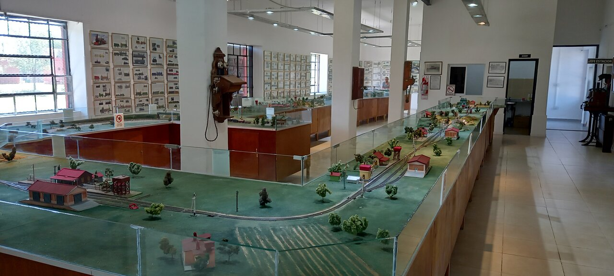
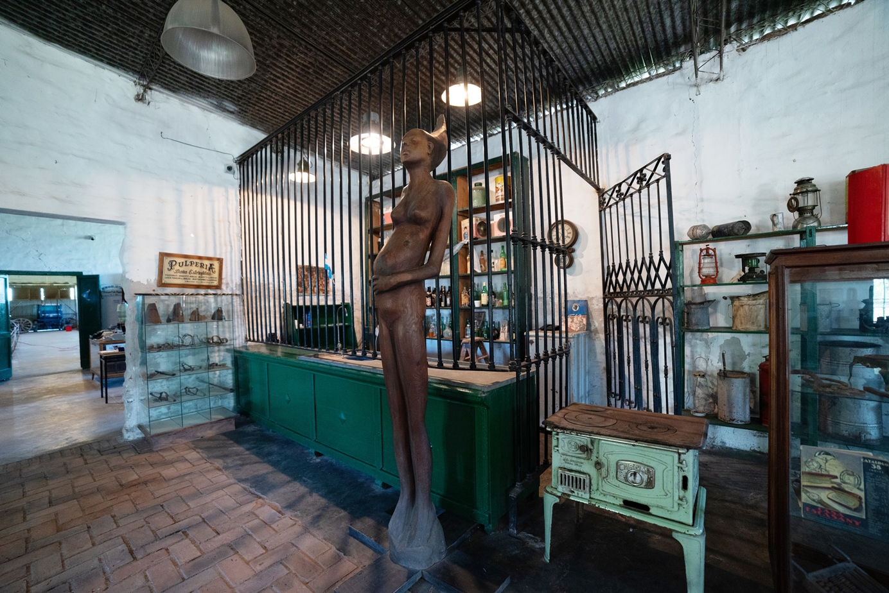

Lugares para visitar

Calle Angosta
La famosa calle de una sola vereda. Sede de la Fiesta Nacional e ícono de la ciudad.
Escuchá la canción "Calle Angosta", himno de la ciudad:

Parque La Pedrera
Complejo deportivo, cultural y recreativo. Un moderno complejo multidisciplinario de 66 hectáreas. Destaca por su Estadio Único con capacidad para 30,000 personas, un autódromo internacional de alta tecnología, zonas recreativas, lagunas y espacios dedicados a la cultura y educación.

Museo Ferroviario
Historia viva del ferrocarril en la estación original. Fundado en 2013, mantiene piezas originales y documentos que vivieron los procesos de desmantelamiento del ferrocarril.

Centro Nativista Héctor Aubert
Museo con carruajes y patrimonio cultural. Uno de los espacios más relevantes para el turismo cultural de la región y para la preservación de la cultura gauchesca.